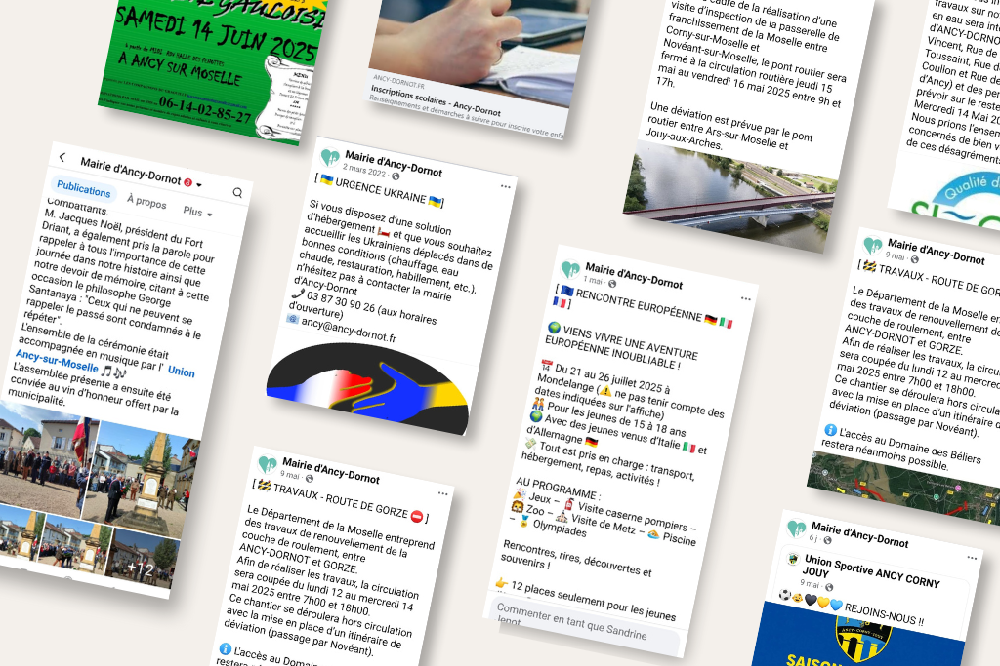

Page Facebook de la mairie d'Ancy-Dornot

{kind=link}

En détail...
- CategorieRéseaux sociaux & Community Management
- Contexte Mise en place et animation de la présence de la commune sur les réseaux sociaux
- Technologie Facebook
- Mon rôle Conception de la page Définition de la ligne éditoriale et planning de publication Respect de la ligne éditoriale choisie Création de contenu multimédia (textes, visuels, vidéos) Gestion des interactions Veille informative et partage de contenu Réponses aux interactions et aux messages
- Défis relevés Création d'une ligne éditoriale adaptée aux spécificités d'une communication publique locale Respect de la neutralité politique et du pluralisme Adaptation du ton selon les publics (citoyens, élus, partenaires) Nécessité de fédérer rapidement une communauté engagée Production régulière de contenus avec des ressources limitées Réponse aux commentaires et aux messages avec justesse et réactivité Veille constante pour identifier et partager des contenus pertinents pour la communauté Gestion de la communication de crise ou situations sensibles Conciliation entre réactivité des réseaux sociaux et processus de validation institutionnels Promotion de la page auprès des différentes générations d'habitants (bulletins, lettres, info mairie, flyers) Coordination avec services techniques, élus et partenaires
- Impact territorial Renforcement du lien de proximité entre administration et citoyens Amélioration de la diffusion des informations municipales Création d'une communauté virtuelle engagée autour de la vie locale Modernisation de l'image institutionnelle
- Collaboration Coordination avec le secrétariat de mairie pour informations officielles Interface avec les associations locales pour promotion d'événements Collaboration avec les élus pour validation des contenus sensibles Formation implicite des citoyens aux nouveaux canaux de communication
- Résultats Communauté active de 700+ abonnés et en croissance constante autour de l'actualité municipale Meilleure diffusion des informations essentielles aux habitants Réduction significatives des demandes d'information répétitives aux services Création d'un lien de proximité entre l'administration communale et les habitants
- URL de la page https://www.facebook.com/AncyDornot/